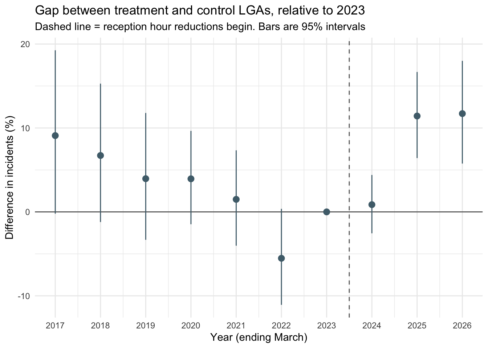

| Estimate (%) | Lower 95% (%) | Upper 95% (%) | p-value |
|---|---|---|---|
| 5 | 0.1 | 10.2 | 0.047 |
Background
In late 2023, Victoria Police reduced public reception counter hours at 43 stations across the state, framing the move as a way to free up officers for street patrols. The policy rolled out in two main phases: 23 stations from November 2023, and a further 20 from January 2024.
The stated logic was simple: fewer officers staffing front counters means more officers on the street, which should deter crime. But does the data support that?
This is a live policy debate. In June 2026, the Herald Sun reported that crime had risen 22.4% in areas with reduced station hours, faster than in the rest of the state, and Victoria Police rejected any link between counter hours and crime. A further round of cuts in Melbourne’s outer north had taken effect only days earlier. I wanted to test the claim properly using a causal inference framework rather than a simple before-and-after comparison.
Data
All crime data comes from the Crime Statistics Agency Victoria, an independent body that publishes recorded criminal incidents by local government area (LGA) annually (year ending March). The dataset covers all 79 Victorian LGAs from 2017 to 2026.
The station closure list was compiled from Victoria Police’s own November 2023 public announcement, which named all 43 affected stations and their revised hours. The May 2026 cuts fall after the end of the data and are not part of the analysis. Each station was mapped to its LGA to build a treatment group of 34 LGAs.
Method
I used a difference-in-differences (DiD) design, which compares the change in crime in treated LGAs (those with reduced hours) against the change in control LGAs (those that kept full hours), over the same period. This controls for statewide trends such as cost-of-living pressures and post-COVID crime recovery, which would have affected all LGAs regardless of the policy.
The model includes LGA fixed effects (controlling for permanent differences between areas) and year fixed effects (controlling for statewide shocks), with standard errors clustered by LGA.
The outcome is the log of recorded incidents, so the estimate reads as a percentage change. This matters because treated LGAs are much larger than control LGAs, averaging roughly 7,800 incidents a year against 3,000. A model in raw counts would mistake that difference in size for a difference in trend.
Checking the Key Assumption
The critical assumption in DiD is parallel trends: that treated and control LGAs were following the same crime trajectory before the policy. To check it, I estimated the gap between the two groups separately for every year, relative to 2023, the last year before the reductions. If the assumption holds, the gaps before 2023 should sit close to zero.

The assumption holds only loosely. No single pre-policy year is significantly different from zero at the 5% level, but the gap drifts downward, from about 9% above the 2023 gap in 2017 to about 6% below it in 2022, and the six pre-policy years are jointly significant (p = 0.007). Treated LGAs were not on exactly the same path as the controls.
What the plot does show clearly is the timing. The gap is flat in 2024, which covers only the first two to four months of reduced hours, then jumps to around 11% in 2025 and 2026, larger than any pre-policy movement.
Results
After accounting for LGA and year fixed effects, treated LGAs recorded approximately 5% more criminal incidents than would have been expected had they followed the control group trend (95% interval 0.1% to 10.2%, p = 0.047). The result is significant at the 5% level, but only just, and the imperfect pre-policy trends mean it should be read as suggestive rather than conclusive.
The direction is consistent with the Herald Sun’s finding, though the size of the effect is much smaller than a raw before-and-after comparison implies.
Which offences moved?
If shorter counter hours matter, the effect should not be spread evenly across every kind of crime. I ran the same model separately for five common offence types, this time on recorded offences rather than incidents.
| Offence type | Estimate (%) | Lower 95% (%) | Upper 95% (%) | p-value |
|---|---|---|---|---|
| A20 Assault and related offences | -1.6 | -6.9 | 4.0 | 0.563 |
| A50 Robbery | -5.9 | -16.6 | 6.2 | 0.323 |
| B30 Burglary/Break and enter | 11.6 | 1.4 | 22.8 | 0.024 |
| B40 Theft | 2.8 | -4.9 | 11.1 | 0.490 |
| D20 Disorderly and offensive conduct | -4.2 | -18.6 | 12.7 | 0.606 |
Only burglary shows a clear change: treated LGAs recorded about 11.6% more burglaries and break-ins than the control trend would predict (p = 0.024). Theft, assault, robbery and disorderly conduct are all statistically indistinguishable from zero, with wide intervals. The overall increase therefore looks concentrated in property crime rather than violence or public order.
Limitations
- Recorded crime is not the same as crime. A closed counter could change how much crime gets reported as well as how much occurs. If anything, fewer walk-in reports would push recorded crime down, which would make these estimates conservative, but the data cannot separate the two.
- Stations were not chosen at random. Victoria Police selected which counters to cut, and the pre-policy trends were not perfectly parallel. Something else that differs between the two groups after 2023 could explain part of the gap.
- LGAs are a coarse unit. A treated LGA can contain several stations that kept full hours, so the analysis measures the effect of having at least one reduced counter, not of living near one.
- The post-policy window is short. There are three data years after the change, and the first covers only a few months of reduced hours.
Conclusion
Areas where Victoria Police cut reception hours recorded around 5% more criminal incidents afterwards than comparable areas, with the increase appearing from 2025 and concentrated in burglary. That is in the direction critics of the policy have claimed, but it is much smaller than the headline figures, only just statistically significant, and rests on an assumption the data supports imperfectly. The evidence is enough to question the claim that the changes had no effect on community safety, and not enough to say with confidence that they caused crime to rise.
References
Data
- Crime Statistics Agency Victoria (2026). Recorded criminal incidents and recorded offences by local government area, year ending March 2026 [Data tables]. https://www.crimestatistics.vic.gov.au/crime-statistics/latest-victorian-crime-data/download-data
- Victoria Police (2023). Announcement of reduced reception counter hours at 43 police stations, 3 November 2023, as reported in local media, e.g. Hodson, G. (2023, 9 November). Reduced counter hours coming to local police stations. West Vic News.
News coverage
- Mount Evelyn Mail (2026, 12 June). Police reject crime, counter hour correlation.
- ABC News (2026, 27 May). Reception hours slashed at police stations in Melbourne’s outer-north.
Methods
- Angrist, J. D., & Pischke, J.-S. (2009). Mostly Harmless Econometrics: An Empiricist’s Companion. Princeton University Press. https://doi.org/10.1515/9781400829828
- Roth, J. (2022). Pretest with caution: Event-study estimates after testing for parallel trends. American Economic Review: Insights, 4(3), 305–322. https://doi.org/10.1257/aeri.20210236
Software
- R Core Team (2025). R: A language and environment for statistical computing. R Foundation for Statistical Computing.
- Bergé, L. (2018). Efficient estimation of maximum likelihood models with multiple fixed-effects: the R package FENmlm. CREA Discussion Papers, 13. (
fixest0.14.2) - Wickham, H. et al. (2019). Welcome to the tidyverse. Journal of Open Source Software, 4(43), 1686. https://doi.org/10.21105/joss.01686
readxl,broom,knitrandkableExtrawere used for data import and tables.